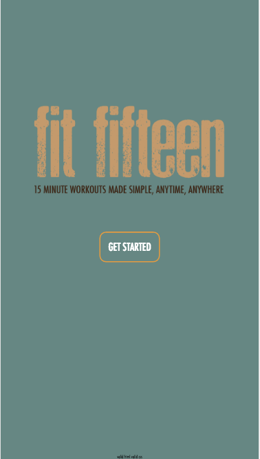
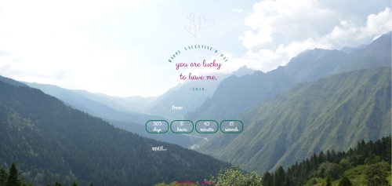
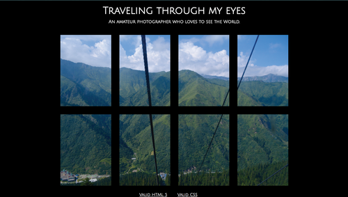
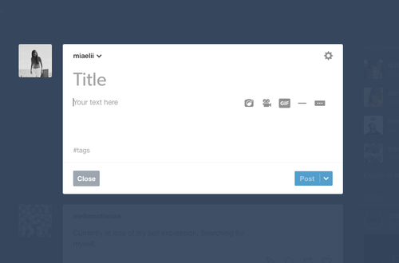
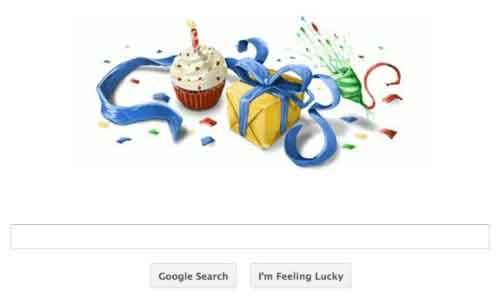

back
Post 5 - 2/20/17

Prompt: Summarize your approach and outcomes, and summarize what you learned. Include a brief evalution of the library in your own words.
I used Sprite animations and css animations to create the first two mock-up pages
of my final app. I essentially created sprite sheets and used animate.css to make them into animated visuals. I wanted the front page logo/title to be animated as I feel like it really engages users when they first open the app. I really enjoyed making the sprite sheets and I feel like i can make anything animate with that skill!
I found that it was really resourceful and easy to learn. My next step is learning to incorporate it in javascript!
Link to Sprite Animations!
Post 4 - 2/13/17

Prompt: Explain how you connected your various visual elements in the user interface with the interactive/experiential design. List three aspects about your solution that you think support effective and interesting interface design.
I
created my time-based studio 4 around Valentine's Day. Unlike the generic rose-y and gushy teddy-bear-filled Valentine's day, I chose to revolve Valentine's day to a theme that is a little less over the top for the eyes because Valentine's
day to me reminds me of weddings because of the love. I chose to make it look like the front cover of a wedding website. Since the day this studio is due falls on Valentine's day itself, I chose to make it a countdown to 2018 Valentine's day.
I think that my content is really sassy with the 'from: you already know' and 'until you get to appreciate me again' interactions. I think that my site is interesting because it's different from what an average Valentine's day themed site
would look like, but it's still aesthetically pleasing. It's funny, so it even be sent to someone you have a crush on, but it could be taken as a joke in case everything backfires. I also think that the color scheme really easy to look at.
The photography that fades out in the background gives the user a sense of FOREVER!! Hahaha.
Post 3 - 2/6/17

Prompt: Talk about why your studio 3 works and what makes it interesting and effective.
I created my studio 3 to be based around photography because that's a major hobby of mine, and in a way, my photos are something I
collect because I love printing them out and hanging them around my workspace and bedroom. They're very personal because they put me back in the place I was when I was traveling to the place the photograph was. I'm a versy visual person, and
the borders I put around the photos to give it a window-feel provides the illusion that someone is peering into a personal part of my life. I also thing that the content is effective and relevant because I put my camera settings on it, giving
users who soley like the photos a sense of how I used my camera. I also think the use of the background mountain photo provides a really aesthetic and inviting platform for users seeing this for the time. It makes for a very obvious photography
page.
Post 2

http://www.slideshare.net/billder/learning-ixd-from-everyday-objects
Prompt: Critique a web-based form that you use often.
This website is not so much a 'form', but I think that it uses the form functions to create user posts. I use Tumblr a lot. I've kept a personal blog since the 7th
grade and I think the reason why I contantly resort to this website is because of it's usability and customization that is really centered around the user. There are comments available for users to interact with one another and give each other
feedback. All the marks on this website are clear for the users.
Post 1

Prompt: Evaluate a user interface that you use often in terms of the visual design, appeal and effectiveness. This is an opportunity to comm-unicate your ideas and pespectives on effective interface design.
A user interface
that I often use often is the Google search engine. The visual design is aesthetically pleasing for it’s purpose. It’s very clean and easy to read, and the Google banner changes everyday, informing the users of special holidays and birthdays
that should be honored. The Google search engine is also very quick to load and gives the users previews of the context in the page. The website is also very compatible with cellphones, making it really easy to navigate on the mobile view.
There are tabs for easy access to shopping, images, videos, etc. What I’ve really liked about the Google search engine is when I try to search a celebrities age, a box will pop up with all the information a user would potentially want to know
about the celebrity like his/her age, height, birthday, relatives, appearances. I think that Google’s user-interface is very user-friendly and easy on the eyes. The spacing of all the words and search results help make it the most popular
search engine.